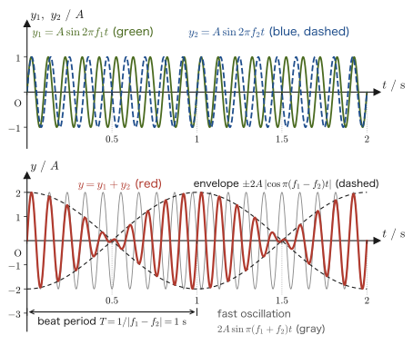
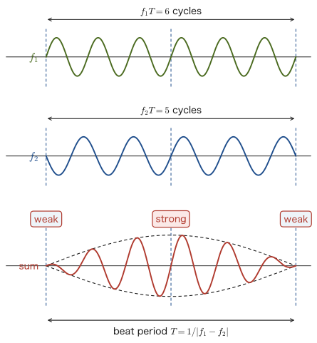
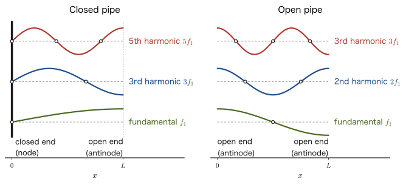
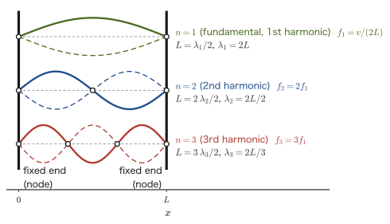

Chapter 12Sound Waves — The Doppler Effect, Beats, Resonance, and Vibrations of Strings
When an ambulance approaches, its siren sounds high-pitched, and when it moves away, the siren sounds low-pitched—many readers probably memorized this in high school physics as the formula for the “Doppler effect.” But why does the pitch we hear change when the sound source moves? In this chapter, we derive the formula from the idea of a hypothetical observer who travels at the same speed as the sound source. We then go on to the shock wave (sonic boom) that occurs when the sound source exceeds the speed of sound, and to the general formula for a sound source and observer moving in directions off the line of sight (the oblique Doppler effect), deriving everything without skipping a single line of any equation.
The other pillar is resonance. Experiments in which a tuning fork sets another tuning fork or a string sounding, and the question of why the strings of a guitar or violin and the pipe of a recorder produce notes of definite pitch—all of these are connected by a single idea, “standing waves under boundary conditions.” We apply the wave function $y=A\sin(\omega t-kx+\phi)$ and the standing waves learned in the previous chapter (Chapter 11) to sound waves, which are longitudinal waves, and to the transverse waves on a string, and proceed to beats (the sum-to-product formula for trigonometric functions), resonance in closed and open pipes, and the speed of waves on a string, $v=\sqrt{S/\rho}$. Using differentiation and trigonometric functions, you will be able to derive for yourself the formulas you memorized in high school physics.
- The temperature dependence of the speed of sound; the derivation of the change in frequency when the sound source or the observer moves (the Doppler effect); and the general formula, including motion in oblique directions
- The geometric derivation of the shock wave (Mach cone) produced when the sound source moves faster than the speed of sound
- The derivation of the period and waveform of the “beats” produced by superposing sounds of slightly different frequencies (an application of the sum-to-product formula)
- The derivation, from boundary conditions, of the standing waves (resonance) in the air columns of closed and open pipes; the physical reason reflection occurs at an open end; and the end correction
- The derivation of the speed of waves on a string, $v=\sqrt{S/\rho}$ (by approximating with uniform circular motion); the natural frequencies of a string fixed at both ends; and resonance of a string driven by a tuning fork
Source notes: Yasuhide Mochizuki, Physics Notes: Waves, pp. 9–17.
12.1 The Speed of Sound and the Doppler Effect
Sound is a longitudinal wave (Chapter 11) whose medium is air (or another elastic body), and the speed at which it travels through the medium (the speed of sound) is determined solely by the properties of the medium itself (its temperature and kind), regardless of how fast the sound source is moving. This is because sound propagates through the interaction inside the medium in which “air molecules push and jostle one another”; the motion of the sound source merely provides the trigger for the vibration—when and where the sound source pushed the air—and does not change the speed at which the resulting wave travels.
Definition 12.1: Speed of sound
The speed $V\ [\mathrm{m/s}]$ at which sound travels through dry air (the speed of sound) is well approximated by the following linear expression, where $t\ [^\circ\mathrm{C}]$ is the Celsius temperature.
\begin{equation} V = 331.5 + 0.6\,t \label{eq:12-sound-speed} \end{equation}Here $t$ is not time but the Celsius temperature (this is a usage valid only within this equation, and is distinct from the $t$ that denotes time). The unit of the coefficient $0.6$ is $\mathrm{m/(s\cdot{}^\circ C)}$, which means that for every $1\,^\circ\mathrm{C}$ rise in temperature, the speed of sound increases by about $0.6\ \mathrm{m/s}$. The speed of sound depends only on the temperature of the medium (here, air) and is unrelated to the motion of the sound source.
Intuition: Why is it a linear expression, $V=331.5+0.6t$? (Preview)
From the chapters on thermodynamics and the kinetic theory of gases (Chapter 23 through Chapter 27), it is known (we use only the result here) that the speed of sound is given by
$$ V=\sqrt{\frac{\gamma RT_{\mathrm K}}{M_{\mathrm m}}} $$where $T_{\mathrm K}\ [\mathrm{K}]$ is the absolute temperature (a quantity distinct from the beat period $T$), $R$ is the gas constant, $M_{\mathrm m}$ is the mean molar mass of air (distinct from the Mach number $M$), and $\gamma$ is the heat capacity ratio of air (the ratio of the heat capacity at constant pressure to that at constant volume, which you will learn in Chapter 23 and Chapter 27). Approximating this expression as a linear function of $t$ ($=T_{\mathrm K}-T_{\mathrm K0}$) around $t=0\,^\circ\mathrm{C}$ ($T_{\mathrm K0}=273.15\ \mathrm{K}$), we obtain
$$ V(t)\approx V(0)+\left.\frac{\dd V}{\dd T_{\mathrm K}}\right|_{T_{\mathrm K}=T_{\mathrm K0}}\!\!\cdot t =\sqrt{\frac{\gamma RT_{\mathrm K0}}{M_{\mathrm m}}}+\frac{1}{2}\sqrt{\frac{\gamma R}{M_{\mathrm m}T_{\mathrm K0}}}\,t $$(here we used $\dd V/\dd T_{\mathrm K}=\tfrac12\sqrt{\gamma R/(M_{\mathrm m}T_{\mathrm K})}=V/(2T_{\mathrm K})$). Evaluating this numerically with the representative values for air, $\gamma\approx1.4$ and $M_{\mathrm m}\approx0.02897\ \mathrm{kg/mol}$, we get $V(0)\approx331.3\ \mathrm{m/s}$ and a slope $V(0)/(2T_{\mathrm K0})\approx0.606\ \mathrm{m/(s\cdot K)}$, which reproduce well the coefficients (both the intercept and the slope) of the empirical formula $331.5+0.6t$ of Definition 12.1. In other words, this empirical formula is a linear approximation of $V=\sqrt{\gamma RT_{\mathrm K}/M_{\mathrm m}}$ near room temperature (so when the temperature differs greatly, a slight discrepancy appears between the linear expression and the exact expression; see Example 12.4).
Definition 12.2: Doppler effect
When the sound source or the observer is moving, the phenomenon in which the frequency of the sound heard by the observer deviates from the original frequency emitted by the sound source is called the Doppler effect.
On the straight line connecting the sound source and the observer, we take the direction in which the wave travels from the sound source to the observer as the positive direction. Let $v_s$ be the component of the sound source's velocity along this positive direction and $v_0$ the same component of the observer's velocity (being “components,” they can take negative values), $V$ the speed of sound, $f$ the original frequency emitted by the sound source, and $f'$ the frequency heard by the observer. All velocities of the sound source and the observer are velocities relative to the air (the medium) (we assume that no wind is blowing). Let us confirm the meaning of the signs: $v_s>0$ means that the sound source moves in the direction toward the observer (the same direction as that in which the sound travels), and $v_0>0$ means that the observer moves in the direction away from the sound source (also the same direction as that in which the sound travels).
Caution: Apply the sign convention consistently to the end
The same caution as in the damped oscillation of Section 7.3 applies here. Rather than deciding the signs in the equation case by case from physical roles such as “the sound source approaches, so the frequency rises” or “the observer recedes, so the frequency falls,” it is better to determine the signs of $v_s,v_0$ mechanically according to the positive direction fixed in advance (the direction in which the sound travels), and then simply substitute them into Eq. \eqref{eq:12-doppler}. For a sound source receding from the observer, substitute $v_s\lt 0$; for an observer approaching the sound source, substitute $v_0\lt 0$. There is no need to memorize the formula separately as an “approaching formula” and a “receding formula.”
Intuition: Wavefronts packed together and stretched out—the effect of the sound source and the effect of the observer
Before getting into the derivation of the formula, let us grasp in words what is happening. Two independent effects are superposed in the Doppler effect.
The effect of a moving sound source (the wavelength changes). The sound source vibrates exactly $f$ times per second, and each time it sends one crest (wavefront) into the air. If the sound source emits crests while advancing toward the observer, then the sound source itself has moved a little forward by the time it emits the next crest, so the spacing between adjacent crests (the wavelength) is shorter than when the sound source is at rest (the right side of Figure 12.1). On the opposite side (the side the sound source is moving away from), the spacing between crests is longer than when the sound source is at rest. This change in wavelength is a change in the spacing of the “pattern” that the wave has imprinted in the air, and it has nothing to do with whether the observer is moving.
The effect of a moving observer (the rate of encountering crests changes). When a pattern of wavelength $\lambda$ has been fixed in the air, if the observer approaches the sound source, the number of crests encountered per second increases (the frequency rises). If the observer moves away, the number of crests encountered decreases (the frequency falls).
In the derivation below, we translate these two effects directly into two equations: “the wavelength is $\lambda=(V-v_s)/f$” and “the frequency heard by the observer is $f'=(V-v_0)/\lambda$.”
Derivation: The Doppler effect formula (the method using a hypothetical observer)
Suppose the sound source vibrates with frequency $f$ (period $T_{\mathrm s}=1/f$) while moving with speed $v_s$ (the direction in which the sound travels being positive). Now consider a hypothetical Person 1 who travels with exactly the same velocity $v_s$ as the sound source. Since Person 1 always keeps the same positional relationship to the sound source, Person 1 directly experiences the wavelength (the distance between adjacent crests) that the sound source actually imprints on space—finding this wavelength is our first goal.
During the time $T_{\mathrm s}$ of one vibration of the sound source, a wavefront (crest) advances a distance $VT_{\mathrm s}$ at the speed of sound $V$. Meanwhile, the sound source itself also advances a distance $v_sT_{\mathrm s}$ during the same time $T_{\mathrm s}$. Therefore, at the instant the sound source emits the next crest, the spacing from the previous crest (the wavelength) is shorter than the distance the wavefront advanced by the amount the sound source has caught up, so that
$$ \lambda = VT_{\mathrm s} - v_sT_{\mathrm s} = (V-v_s)T_{\mathrm s} = \frac{V-v_s}{f} $$holds. Restating this from Person 1's standpoint: Person 1 moves with the same velocity as the sound source, so Person 1 is at rest relative to the sound source and feels the sound source's vibration directly at frequency $f$. The wave (sound) itself, on the other hand, propagates at the speed of sound $V$ through the medium (the stationary air), so to Person 1, who moves with the same velocity $v_s$ as the sound source, the wave appears to overtake Person 1 at the relative speed $V-v_s$. Writing “relative speed $=$ frequency $\times$ wavelength” (the basic relation for waves, Chapter 11) from Person 1's standpoint gives $V-v_s=f\lambda$, and solving this for $\lambda$ yields the same expression:
\begin{equation} \lambda=\frac{V-v_s}{f} \label{eq:12-doppler-lambda} \end{equation}Note that this $\lambda$ is the “true” wavelength that the sound source has actually imprinted on space, and it does not change no matter at what velocity the observer (Person 2) is moving.
Next, consider the case in which the actual observer (Person 2, velocity $v_0$) hears this wave. From Person 2's standpoint, Person 2 receives the wave propagating at speed $V$ while moving at velocity $v_0$ (the direction in which the sound travels being positive), so the speed of the wave relative to Person 2 is $V-v_0$. Since the wavelength remains the $\lambda$ determined by Eq. \eqref{eq:12-doppler-lambda} (constant regardless of Person 2's motion), the frequency $f'$ heard by Person 2 is
$$ f'=\frac{V-v_0}{\lambda}=\frac{V-v_0}{(V-v_s)/f} $$and rearranging this gives the following formula.
\begin{equation} f'=\frac{V-v_0}{V-v_s}\cdot f \label{eq:12-doppler} \end{equation}∎
Formula 12.1: Doppler effect
Let $V$ be the speed of sound, $f$ the frequency of the sound source, $v_s$ the velocity component of the sound source (positive in the direction toward the observer), and $v_0$ the velocity component of the observer (positive in the direction away from the sound source). Then the frequency $f'$ heard by the observer is
$$ f'=\frac{V-v_0}{V-v_s}\cdot f $$This holds with all velocities measured relative to the air, within the range of applicability $\abs{v_s}\lt V$, $\abs{v_0}\lt V$. The case-by-case formulas commonly seen in high school physics, such as those for “when the sound source approaches” and “when the observer recedes,” can all be reproduced by simply substituting the signs (positive or negative) of $v_s,v_0$ correctly into this one equation. As $v_s\to V$ (the sound source approaches the speed of sound), the denominator $V-v_s$ approaches 0 and $f'\to\infty$, and for $v_s>V$ the value of the expression becomes negative and loses its meaning (because the sound source overtakes the wavefronts it emitted itself). This limit leads to the shock wave of the next section ($v_s>V$).
Example 12.1: Air temperature and the speed of sound
What is the speed of sound, in $\mathrm{m/s}$, on a day when the air temperature is $t=20\,^\circ\mathrm{C}$ and on a day when it is $t=0\,^\circ\mathrm{C}$? Also, to roughly what temperature in $^\circ\mathrm{C}$ does the “commonly used rule-of-thumb value of the speed of sound,” $340\ \mathrm{m/s}$, correspond?
Solution. Substitute into Definition 12.1 (Eq. \eqref{eq:12-sound-speed}). For $t=20\,^\circ\mathrm{C}$,
$$ V=331.5+0.6\times20=331.5+12.0=343.5\ \mathrm{m/s} $$For $t=0\,^\circ\mathrm{C}$, $V=331.5\ \mathrm{m/s}$ (the intercept of the equation itself). The temperature corresponding to $V=340\ \mathrm{m/s}$ is obtained by solving $340=331.5+0.6t$ for $t$:
$$ t=\frac{340-331.5}{0.6}=\frac{8.5}{0.6}\approx14.2\,^\circ\mathrm{C} $$Therefore, the rule-of-thumb value $340\ \mathrm{m/s}$ corresponds to the speed of sound on a rather cool day, at a temperature of about $14\,\text{–}\,15\,^\circ\mathrm{C}$ (some textbooks use $340\ \mathrm{m/s}$, the value at 15 $^\circ$C, as the standard).
Example 12.2: Ambulance siren (Doppler effect)
An ambulance sounding a siren of frequency $f=880\ \mathrm{Hz}$ approaches a stationary observer at a speed of $20\ \mathrm{m/s}$. The air temperature is $15\,^\circ\mathrm{C}$. (1) Find the frequency $f'$ heard by the observer. (2) Find the frequency $f''$ heard after the ambulance has passed the observer and is moving away at the same speed.
Solution. At an air temperature of $15\,^\circ\mathrm{C}$, Eq. \eqref{eq:12-sound-speed} gives the speed of sound $V=331.5+0.6\times15=340.5\ \mathrm{m/s}$. Since the observer is at rest, $v_0=0$ (in both cases).
(1) The sound source (the ambulance) is moving toward the observer, that is, in the same direction as the positive direction (the direction from the sound source to the observer), so $v_s=+20\ \mathrm{m/s}$. By Formula 12.1 (Eq. \eqref{eq:12-doppler}),
$$ f'=\frac{V-v_0}{V-v_s}\cdot f=\frac{340.5-0}{340.5-20}\times880=\frac{340.5}{320.5}\times880\approx934.9\ \mathrm{Hz} $$(2) When the ambulance moves away, the direction in which the sound travels (from the sound source to the observer) and the direction of the ambulance's velocity are opposite (the ambulance moves away from the observer), so $v_s=-20\ \mathrm{m/s}$.
$$ f''=\frac{V-v_0}{V-v_s}\cdot f=\frac{340.5-0}{340.5-(-20)}\times880=\frac{340.5}{360.5}\times880\approx831.2\ \mathrm{Hz} $$The siren sounds higher than its true pitch while the ambulance approaches ($934.9\ \mathrm{Hz}$) and lower while it moves away after passing ($831.2\ \mathrm{Hz}$), and the difference is as large as $934.9-831.2\approx103.7\ \mathrm{Hz}$—this is why the pitch seems to drop suddenly at the moment the ambulance passes.
Example 12.3: When the observer also moves
An ambulance is traveling at a speed of $20\ \mathrm{m/s}$ while emitting a sound of frequency $f=1000\ \mathrm{Hz}$. Take the speed of sound to be $V=340\ \mathrm{m/s}$. (1) An observer on a bicycle approaches the ambulance, riding toward it at a speed of $10\ \mathrm{m/s}$. Find the frequency heard by the observer. (2) The observer is riding ahead of the ambulance, in the same direction as the ambulance (that is, away from it), at a speed of $10\ \mathrm{m/s}$. Find the frequency heard.
Solution. Take the direction in which the sound travels (from the sound source to the observer) as positive. In both cases the ambulance is moving toward the observer, so $v_s=+20\ \mathrm{m/s}$.
(1) The observer is moving in the direction toward the sound source. This is the opposite direction to that in which the sound travels, so $v_0=-10\ \mathrm{m/s}$. By Formula 12.1 (Eq. \eqref{eq:12-doppler}),
$$ f'=\frac{V-v_0}{V-v_s}f=\frac{340-(-10)}{340-20}\times1000=\frac{350}{320}\times1000\approx1094\ \mathrm{Hz} $$The frequency rises because of both the effect of the sound source approaching (the denominator becomes smaller) and the effect of the observer approaching (the numerator becomes larger).
(2) The observer is moving in the direction away from the sound source, that is, in the same direction as the direction in which the sound travels, so $v_0=+10\ \mathrm{m/s}$.
$$ f'=\frac{340-10}{340-20}\times1000=\frac{330}{320}\times1000\approx1031\ \mathrm{Hz} $$The effect of the ambulance approaching the observer (raising the frequency) is greater than the effect of the observer receding (lowering the frequency), so on balance the sound is heard higher than the original $1000\ \mathrm{Hz}$.
12.2 Shock Waves — When the Source Exceeds the Speed of Sound
In Formula 12.1 (Eq. \eqref{eq:12-doppler}), as the speed $v_s$ of the sound source approaches the speed of sound $V$, the denominator $V-v_s$ approaches 0, and the frequency $f'$ heard by the observer becomes arbitrarily large. What happens, then, if $v_s$ exceeds the speed of sound $V$? In that case it is no longer enough to say that “a higher frequency is heard ahead of the sound source”: the sound source itself overtakes the sound (the wavefronts) that it has emitted, and a completely different phenomenon—the shock wave—arises.
Intuition: How do the wavefronts overlap as the sound source speeds up?
Let us compare how a sound source advances while emitting wavefronts at regular time intervals as we change its speed $v_s$ (Figure 12.2). (a) When $v_s=0.5V$, the older wavefronts are larger circles, nested one inside another, and the spacing of the wavefronts merely becomes tighter ahead of the sound source. (b) As $v_s$ approaches $V$, the spacing ahead becomes tighter and tighter, and at $v_s=V$ all the wavefronts touch and overlap at the present position of the sound source—the sound source catches up with its own sound. This is the true identity of the “sound barrier,” which was said to stand in the way of an airplane like a wall of air as it approached the speed of sound. (c) When $v_s\gt V$, the sound source overtakes all the wavefronts it emitted in the past, and the wavefronts are left behind the sound source. Then two straight lines (a cone in three dimensions) appear that enclose the countless left-behind circles from the outside. This is the Mach cone. In the following derivation we find how wide this cone opens.
Definition 12.3: Mach number and shock wave
The ratio $M\equiv v_s/V$ of the speed $v_s$ of the sound source to the speed of sound $V$ is called the Mach number. When $M\gt1$ (the sound source moves faster than sound: supersonic), a conical shock front forms behind the sound source. This is called the Mach cone.
Derivation: Half-angle of the Mach cone, $\sin\theta=V/v_s$
Suppose that the sound source moves in a straight line in the $+x$ direction at a constant speed $v_s$ ($v_s\gt V$), and take the position of the sound source at time $t=0$ (the “present”) as the origin $\mathrm O$. At a past time $t=-\tau$ ($\tau\gt0$) the sound source was at the position $(-v_s\tau,\,0)$, and there it emitted a spherical wave (a circle in a two-dimensional cross section). Its wavefront keeps expanding in all directions at the speed of sound $V$, so at present ($t=0$) it is a circle with center $(-v_s\tau,\,0)$ and radius $V\tau$. This holds for every $\tau\gt0$; that is, the wavefronts emitted from all the positions through which the sound source has passed in the past are now spread out in space as circles of different radii (Figure 12.3).
Since the sound source is faster than sound ($v_s\gt V$), it has gone on ahead of the wavefronts that it itself emitted in the past. Therefore none of these circles contains the origin $\mathrm O$ in its interior; the origin lies outside all of them. Consider a tangent drawn from the external point $\mathrm O$ to the circle with center $C(\tau)=(-v_s\tau,0)$ and radius $R(\tau)=V\tau$. The distance from $\mathrm O$ to the center $C(\tau)$ is $d(\tau)=\abs{-v_s\tau}=v_s\tau$, so the angle $\theta(\tau)$ between the tangent and the line $\mathrm{O}C(\tau)$ is determined by the ratio of the sides of the right triangle (whose vertices are the origin, the point of tangency, and the center; the radius at the point of tangency is perpendicular to the tangent):
$$ \sin\theta(\tau)=\frac{R(\tau)}{d(\tau)}=\frac{V\tau}{v_s\tau}=\frac{V}{v_s} $$Remarkably, the right-hand side is a constant independent of $\tau$. That is, for the wavefront emitted at any past instant, the tangent drawn from the present position of the sound source makes the same angle $\theta$—in other words, the common tangent (envelope) enclosing all these circles consists of two straight lines with their vertex at the origin (in two dimensions; a conical surface in three dimensions). This is the shock front, and its half-angle $\theta$ (the angle between the extension line of the sound source's direction of motion and the shock front) is given by
\begin{equation} \sin\theta=\frac{V}{v_s}=\frac{1}{M} \label{eq:12-mach-cone} \end{equation}Only when $M=v_s/V\gt1$ do we have $0\lt\sin\theta\le1$, and the cone can actually exist (when $M\le1$, the origin falls inside all the circles and no external tangent can be drawn—this corresponds to the fact that in the ordinary case where the sound source moves at or below the speed of sound no shock front forms, and the phenomenon remains merely one in which “the spacing of the wavefronts changes,” as in the Doppler effect of the preceding section).
∎
Theorem 12.1: Mach cone
When a sound source moves in a straight line at a constant speed $v_s$ faster than the speed of sound $V$ (Mach number $M=v_s/V\gt1$), a conical shock front (the Mach cone) with half-angle $\theta$ ($\sin\theta=V/v_s=1/M$) forms behind the sound source. On the surface of this cone, the wavefronts emitted by the sound source at all past times overlap simultaneously, forming a large-amplitude “shock wave.” Outside the cone (the broad region ahead of the sound source), no sound has yet arrived at all.
Application: The sonic boom
At the very instant the surface of the Mach cone (the shock front) passes beneath an aircraft flying at supersonic speed, an observer on the ground experiences the almost simultaneous arrival of the countless wavefronts that the sound source has been emitting continuously until then—this is heard as a loud, percussive “bang” (the sonic boom). After the cone has passed, the sound source has already moved away, and the sound is again heard with the ordinary Doppler effect. This geometrical picture also shows that a broad “quiet” region, to which no sound at all reaches, extends outside the Mach cone (ahead of the sound source).
Example 12.4: The Mach cone of a supersonic airliner
The air temperature around a supersonic airliner cruising at an altitude of about 17,000 meters is approximately $t=-56\,^\circ\mathrm{C}$. (1) Find the speed of sound $V$ at this temperature. (2) When the airliner's ground speed is $v_s=600\ \mathrm{m/s}$, find the Mach number $M$ and the half-angle $\theta$ of the Mach cone.
Solution. (1) Substituting $t=-56$ into Eq. \eqref{eq:12-sound-speed} gives
$$ V=331.5+0.6\times(-56)=331.5-33.6=297.9\ \mathrm{m/s} $$(Note that the speed of sound decreases as the temperature drops—the air aloft is colder than at ground level, so the speed of sound is lower there as well. Note also that Eq. \eqref{eq:12-sound-speed} is a first-order approximation near room temperature, so at $-56\,^\circ\mathrm{C}$ it gives a value about $0.9\,\%$ larger than the exact value $\sqrt{\gamma RT_{\mathrm K}/M_{\mathrm m}}\approx295\ \mathrm{m/s}$, but we use it here as a rough guide.)
(2) By Definition 12.3, the Mach number is
$$ M=\frac{v_s}{V}=\frac{600}{297.9}\approx2.01 $$Since $M\gt1$, the flight is supersonic and a Mach cone forms. From Eq. \eqref{eq:12-mach-cone},
$$ \sin\theta=\frac{V}{v_s}=\frac{1}{M}\approx\frac{1}{2.01}\approx0.497 \qquad\therefore\ \theta\approx\arcsin(0.497)\approx29.8^\circ $$When the airliner flies at about Mach 2 (about twice the speed of sound), the shock front is a cone with a half-angle of about $30^\circ$ with respect to the direction of motion (to simplify the calculation, Figure 12.3 depicts exactly the case $M=2$, $\theta=30^\circ$).
12.3 The Oblique Doppler Effect and Beats
Formula 12.1 in Section 12.1 dealt with the case in which the sound source and the observer move along the straight line joining them (one-dimensional motion). In practice, however, it is more common for the sound source or the observer to move in a direction off that line (for example, a person standing beside a railroad crossing who hears the whistle of a train, or someone who hears, from a little way off, the siren of an ambulance running along a road that crosses their line of sight). Here we derive the Doppler-effect formula for motion in a general direction.
12.3.1 Oblique Doppler effect
Derivation: The Doppler effect for a sound source and an observer moving in arbitrary directions
First, note that “the sound the observer is hearing right now” is sound that the sound source emitted in the past (sound travels at a finite speed $V$). (In what follows, the upright $\mathrm S$ and $\mathrm O$ are symbols for the sound source and the observer, respectively; they are distinct from the tension $S$ (italic) in Section 12.6.) So we consider that the sound emitted by the sound source at time $t_{\mathrm e}$ (emission) from position $\bm r_{\mathrm S}(t_{\mathrm e})$ reaches the observer, who is at position $\bm r_{\mathrm O}(t_{\mathrm r})$ at time $t_{\mathrm r}$ (reception). Since sound travels in a straight line at speed $V$ in still air,
\begin{equation} V\,(t_{\mathrm r}-t_{\mathrm e})=\abs{\bm r_{\mathrm O}(t_{\mathrm r})-\bm r_{\mathrm S}(t_{\mathrm e})} \label{eq:12-retarded} \end{equation}holds. Define the unit vector pointing from the position where the sound was emitted to the position where it is received by
$$ \bm n=\frac{\bm r_{\mathrm O}(t_{\mathrm r})-\bm r_{\mathrm S}(t_{\mathrm e})}{\abs{\bm r_{\mathrm O}(t_{\mathrm r})-\bm r_{\mathrm S}(t_{\mathrm e})}} $$(the direction of the sound ray; Figure 12.4). Let the velocity of the sound source be $\bm v_{\mathrm S}=\dd\bm r_{\mathrm S}/\dd t_{\mathrm e}$ (its value at the instant of emission) and the velocity of the observer be $\bm v_{\mathrm O}=\dd\bm r_{\mathrm O}/\dd t_{\mathrm r}$ (its value at the instant of reception). The sound that the sound source emits during a small time interval $\dd t_{\mathrm e}$ reaches the observer during a small time interval $\dd t_{\mathrm r}$. To find the ratio $\dd t_{\mathrm r}/\dd t_{\mathrm e}$, we differentiate both sides of Eq. \eqref{eq:12-retarded} with respect to $t_{\mathrm e}$. By the rule for differentiating a composite function, the derivative of the magnitude $\abs{\bm d}$ on the right-hand side (where $\bm d=\bm r_{\mathrm O}-\bm r_{\mathrm S}$) is $\dd\abs{\bm d}/\dd t_{\mathrm e}=\bm n\cdot\dd\bm d/\dd t_{\mathrm e}$, and since $\dd\bm d/\dd t_{\mathrm e}=\bm v_{\mathrm O}\,\dd t_{\mathrm r}/\dd t_{\mathrm e}-\bm v_{\mathrm S}$, we obtain
$$ V\left(\diff{t_{\mathrm r}}{t_{\mathrm e}}-1\right)=\bm n\cdot\left(\bm v_{\mathrm O}\diff{t_{\mathrm r}}{t_{\mathrm e}}-\bm v_{\mathrm S}\right) $$Collecting the terms that contain $\dd t_{\mathrm r}/\dd t_{\mathrm e}$ on the left-hand side and solving, we find
$$ \left(V-\bm n\cdot\bm v_{\mathrm O}\right)\diff{t_{\mathrm r}}{t_{\mathrm e}}=V-\bm n\cdot\bm v_{\mathrm S} \qquad\therefore\quad \diff{t_{\mathrm r}}{t_{\mathrm e}}=\frac{V-\bm v_{\mathrm S}\cdot\bm n}{V-\bm v_{\mathrm O}\cdot\bm n} $$The sound source emits $f$ wave crests per second of emission time, so the number of crests the observer hears per second of reception time (the frequency heard) is obtained by dividing the number of crests by the reception time:
\begin{equation} f'=f\,\diff{t_{\mathrm e}}{t_{\mathrm r}}=\frac{V-\bm{v}_{\mathrm O}\cdot\bm{n}}{V-\bm{v}_{\mathrm S}\cdot\bm{n}}\cdot f \label{eq:12-doppler-oblique} \end{equation}Splitting each velocity vector into a component parallel to $\bm n$ (the radial component) and a component perpendicular to $\bm n$ (the transverse component), we have $\bm v_{\mathrm S}=(\bm v_{\mathrm S}\cdot\bm n)\,\bm n+\bm v_{\mathrm S}^{\perp}$, and only the inner products (dot products) of the radial components, $\bm v_{\mathrm S}\cdot\bm n$ and $\bm v_{\mathrm O}\cdot\bm n$, enter Eq. \eqref{eq:12-doppler-oblique}; the transverse components do not appear—because even if the sound source or the observer moves perpendicular to the sound ray, the distance the sound travels does not change (over a small time interval). Also, if $\theta_{\mathrm S},\theta_{\mathrm O}$ denote the angles between $\bm n$ and the velocities, then $\bm v_{\mathrm S}\cdot\bm n=v_{\mathrm S}\cos\theta_{\mathrm S}$ and $\bm v_{\mathrm O}\cdot\bm n=v_{\mathrm O}\cos\theta_{\mathrm O}$, so in terms of the angles, $f'=f\,(V-v_{\mathrm O}\cos\theta_{\mathrm O})/(V-v_{\mathrm S}\cos\theta_{\mathrm S})$.
The meaning of the signs is exactly the same as in Section 12.1: if $\bm{v}_{\mathrm S}\cdot\bm{n}$ (the radial component of the sound source's velocity) is positive, the sound source is approaching the observer, and if $\bm{v}_{\mathrm O}\cdot\bm{n}$ (the radial component of the observer's velocity) is positive, the observer is receding from the sound source. Since the positional relationship among the sound source, the observer, and the sound ray changes with time, $\bm n$—and hence $\bm{v}_{\mathrm S}\cdot\bm{n}$ and $\bm{v}_{\mathrm O}\cdot\bm{n}$—are in general quantities that change from moment to moment. Eq. \eqref{eq:12-doppler-oblique} gives the frequency of that sound by using the velocity of the sound source at the instant it emitted the sound and the velocity of the observer at the instant of receiving the sound.
∎
Formula 12.2: The Doppler effect for a sound source and an observer moving in general directions
Let $\bm n$ be the unit vector pointing from the position where the sound was emitted to the position where it is received, let $\bm{v}_{\mathrm S}$ be the velocity vector of the sound source at the instant of emission, and let $\bm{v}_{\mathrm O}$ be the velocity vector of the observer at the instant of reception. Then the frequency heard by the observer is
$$ f'=\frac{V-\bm{v}_{\mathrm O}\cdot\bm{n}}{V-\bm{v}_{\mathrm S}\cdot\bm{n}}\cdot f $$(where $\abs{\bm v_{\mathrm S}},\abs{\bm v_{\mathrm O}}\lt V$). When the sound source moves at constant velocity and the observer is at rest, $f'=f/(1-\bm v_{\mathrm S}\cdot\bm n/V)$ holds exactly. When $\bm{v}_{\mathrm S},\bm{v}_{\mathrm O}$ are both parallel to $\bm n$ (the sound source and the observer move along the straight line joining them), the inner products $\bm{v}_{\mathrm S}\cdot\bm{n},\bm{v}_{\mathrm O}\cdot\bm{n}$ become $v_s,v_0$ of Section 12.1 as they stand, and the result agrees with Formula 12.1 (Eq. \eqref{eq:12-doppler})—that is, Formula 12.1 is nothing other than a special case (one-dimensional motion) of this general formula. When the directions of motion of the sound source and the observer are perpendicular to the sound ray $\bm n$ ($\bm{v}_{\mathrm S}\cdot\bm{n}=\bm{v}_{\mathrm O}\cdot\bm{n}=0$), we get $f'=f$, and no Doppler effect occurs.
Example 12.5: The sound of a car on a straight road (oblique Doppler effect)
A car is traveling along a straight road at a constant speed $v=30\ \mathrm{m/s}$ while sounding its horn at frequency $f=500\ \mathrm{Hz}$. The observer is at rest at a point at perpendicular distance $d=40\ \mathrm{m}$ from the road. Take the speed of sound to be $V=340\ \mathrm{m/s}$. (1) Find the frequency $f'$ of the sound emitted at the position where the car comes closest to the observer (the position on the road directly beside the observer), and answer how many seconds later that sound reaches the observer and how far the car has traveled by then. (2) Find the frequency $f'$ of the sound emitted when the car is $40\ \mathrm{m}$ short of the position directly beside the observer. (3) Find the frequency of the sound that reaches the observer at exactly the instant the car passes the point directly beside the observer.
Solution. Take the direction of the road as the $x$-axis and the observer's position as $(0,d)$; let the car's position be $(x_{\mathrm S},0)$ and its velocity vector $\bm v_{\mathrm S}=(v,0)$ (the observer is at rest, $\bm v_{\mathrm O}=\bm 0$). For the sound emitted when the car was at position $x_{\mathrm S}$, the direction of the sound ray (the unit vector from the car to the observer) is
$$ \bm n=\frac{(0,d)-(x_{\mathrm S},0)}{\sqrt{x_{\mathrm S}^2+d^2}}=\frac{(-x_{\mathrm S},\,d)}{\sqrt{x_{\mathrm S}^2+d^2}} $$so the radial component of the velocity is
$$ \bm{v}_{\mathrm S}\cdot\bm n=\frac{-v\,x_{\mathrm S}}{\sqrt{x_{\mathrm S}^2+d^2}} $$Also, the time it takes for that sound to reach the observer is $\sqrt{x_{\mathrm S}^2+d^2}/V$.
(1) At the position directly beside the observer, $x_{\mathrm S}=0$, so $\bm{v}_{\mathrm S}\cdot\bm n=0$ (the sound ray is perpendicular to the road, and the car's velocity has no component along the sound ray). By Formula 12.2 (Eq. \eqref{eq:12-doppler-oblique}),
$$ f'=\frac{V-0}{V-0}\times f=f=500\ \mathrm{Hz} $$This sound reaches the observer $d/V=40/340\approx0.118\ \mathrm{s}$ later, and in that time the car advances $v\times0.118\approx3.5\ \mathrm{m}$ and has already passed the point directly beside the observer.
(2) This is the sound emitted at $x_{\mathrm S}=-40\ \mathrm{m}$. Since $\sqrt{x_{\mathrm S}^2+d^2}=\sqrt{40^2+40^2}=40\sqrt2\approx56.57\ \mathrm{m}$,
$$ \bm{v}_{\mathrm S}\cdot\bm n=\frac{-30\times(-40)}{56.57}=\frac{1200}{56.57}\approx21.2\ \mathrm{m/s} $$(Since the sign is positive, the car is moving toward the observer at the instant it emits the sound—this agrees with intuition.) By Formula 12.2,
$$ f'=\frac{340-0}{340-21.2}\times500=\frac{340}{318.8}\times500\approx533.3\ \mathrm{Hz} $$This sound takes $56.57/340\approx0.166\ \mathrm{s}$ to arrive, and the car advances about $5.0\ \mathrm{m}$ in that time, so at the instant the sound arrives the car is at $x\approx-35.0\ \mathrm{m}$.
(3) Suppose that at the instant the sound reaches the observer (take the reception time to be $0$), the car is directly beside the observer ($x=0$). If the emission time is $t_{\mathrm e}\lt0$, the car's position at that time is $x_{\mathrm e}=vt_{\mathrm e}$, and by Eq. \eqref{eq:12-retarded}, $V(0-t_{\mathrm e})=\sqrt{(vt_{\mathrm e})^2+d^2}$. Squaring both sides and rearranging gives $(V^2-v^2)t_{\mathrm e}^2=d^2$, that is,
$$ \abs{t_{\mathrm e}}=\frac{d}{\sqrt{V^2-v^2}}=\frac{40}{\sqrt{340^2-30^2}}=\frac{40}{338.7}\approx0.1181\ \mathrm{s} $$The position where the sound was emitted is $x_{\mathrm e}=-30\times0.1181\approx-3.54\ \mathrm{m}$, and the radial component at this time is
$$ \bm{v}_{\mathrm S}\cdot\bm n=\frac{-v\,x_{\mathrm e}}{\sqrt{x_{\mathrm e}^2+d^2}}=\frac{30\times3.54}{\sqrt{3.54^2+40^2}}\approx\frac{106.3}{40.16}\approx2.65\ \mathrm{m/s} $$so by Formula 12.2,
$$ f'=\frac{340}{340-2.65}\times500\approx503.9\ \mathrm{Hz} $$Therefore, the sound heard at the very instant the car passes the observer is about $504\ \mathrm{Hz}$, slightly higher than the original $500\ \mathrm{Hz}$, and the pitch heard returns to the original $500\ \mathrm{Hz}$ about $0.12\ \mathrm{s}$ after that (when the car has advanced about $3.5\ \mathrm{m}$). A continuous change—high while the car approaches, and low once it has passed—reaches the ear.
12.3.2 Beats
Definition 12.4: Beats
When two sounds with slightly different frequencies are superposed, a phenomenon occurs in which the loudness of the sound waxes and wanes periodically. This is called beats.
Suppose that two sounds of frequencies $f_1,f_2$ ($f_1\approx f_2$, slightly different), such as the sounds of two tuning forks, are sounded at the same time. Let the time needed for one cycle of the beats (from one intensity maximum to the next) be the beat period $T\ [\mathrm{s}]$. In $T$ seconds the wave of frequency $f_1$ produces exactly $f_1T$ crests, and the wave of frequency $f_2$ produces exactly $f_2T$ crests. One cycle of the beats corresponds exactly to “one of the waves oscillating exactly one more cycle than the other,” so
$$ \abs{f_1T-f_2T}=1 $$that is,
\begin{equation} \abs{f_1-f_2}=\frac{1}{T}\equiv f_{\text{beat}} \label{eq:12-beat-freq} \end{equation}This is the beat frequency (the number of repetitions per second of the alternation “loud, soft, loud, soft, …” that is heard).
Derivation: The waveform of beats
Let the displacements produced by the two sound sources (with a common amplitude $A$) be
$$ y_1=A\sin2\pi f_1t,\qquad y_2=A\sin2\pi f_2t $$(the difference between $f_1$ and $f_2$ is assumed to be small). By the principle of superposition (Chapter 11), the combined wave at the observer's position is $y=y_1+y_2$. Here we use the sum-to-product formula for trigonometric functions (High School Mathematics, Section 5.6)
$$ \sin A+\sin B=2\sin\frac{A+B}{2}\cos\frac{A-B}{2} $$with $A=2\pi f_1t$ and $B=2\pi f_2t$, which gives
$$ y=y_1+y_2=A\sin2\pi f_1t+A\sin2\pi f_2t =2A\sin\!\left(2\pi\cdot\frac{f_1+f_2}{2}\,t\right)\cos\!\left(2\pi\cdot\frac{f_1-f_2}{2}\,t\right) $$This expression has the structure of a sinusoidal wave of frequency $(f_1+f_2)/2$ (the mean of the two original frequencies; since $f_1\approx f_2$, it is nearly equal to $f_1,f_2$ themselves, so this is a fast oscillation) multiplied, as an amplitude, by a cosine function of frequency $\abs{f_1-f_2}/2$ (half the difference; since $f_1\approx f_2$, it is extremely slow). Let $T_1$ be the period of the fast oscillation and $T_2$ the period of the slow oscillation (the variation of the amplitude). Then
\begin{equation} T_1=\frac{2}{f_1+f_2}\ [\mathrm{s}],\qquad T_2=\frac{2}{\abs{f_1-f_2}}\ [\mathrm{s}]\qquad(T_1\ll T_2) \label{eq:12-beat-periods} \end{equation}However, $\cos(2\pi t/T_2)$ changes sign within one period, and the absolute value of the amplitude, $\abs{2A\cos(\cdots)}$, repeats “strong → weak → strong” twice in one period $T_2$ (because the absolute value has a “peak” both when $\cos$ is positive and when it is negative). Therefore, the period of the alternation of “loud” and “soft” that is actually heard by the ear (the beats) is $T_2/2=1/\abs{f_1-f_2}$, which agrees with $T=1/f_{\text{beat}}$ in Eq. \eqref{eq:12-beat-freq}.
In other words, the combined wave $y$ is a fast oscillation of frequency $(f_1+f_2)/2$ (the thin gray line in the lower panel of Figure 12.5) multiplied by the slowly varying amplitude $2A\cos\!\left(2\pi\cdot\tfrac{f_1-f_2}{2}\,t\right)$, and the curve traced by the absolute value of this amplitude (black dashed line) is called the envelope.
∎
Math Tool: The sum-to-product formula and Fourier series
The sum-to-product formula used in the derivation of beats (High School Mathematics, Section 5.6) is the simplest example showing what waveform results when waves of different frequencies are added together. The theory of building complicated waveforms by adding waves of different frequencies develops into the Fourier series, which is studied in Chapter 27 and Chapter 28 of the companion volume “University Mathematics” (AD 02), and which we will revisit in this book in Chapter 17.


Example 12.6: Frequency and period of beats
Tuning fork A of frequency $440\ \mathrm{Hz}$ and tuning fork B of unknown frequency are sounded at the same time, and 3 beats per second are heard. (1) Find the possible values of the frequency of tuning fork B. (2) When a small weight (a paper clip) is attached to tuning fork B, the number of beats increases to 5 per second. In general, attaching a weight to a tuning fork is known to lower its frequency. What is the true frequency of tuning fork B?
Solution. (1) By Eq. \eqref{eq:12-beat-freq}, $\abs{f_{\mathrm A}-f_{\mathrm B}}=f_{\text{beat}}=3\ \mathrm{Hz}$, so $f_{\mathrm B}=440\pm3$; that is, either $f_{\mathrm B}=443\ \mathrm{Hz}$ or $f_{\mathrm B}=437\ \mathrm{Hz}$, and the number of beats alone cannot tell us which.
(2) Attaching the weight lowers the frequency of tuning fork B. If $f_{\mathrm B}=443\ \mathrm{Hz}$ (higher than A), then lowering the frequency of B would bring it closer to A, so the number of beats should decrease. In fact, however, the number of beats increased from 3 to 5 per second, so the frequency of B has moved still farther from A. This corresponds to the case $f_{\mathrm B}=437\ \mathrm{Hz}$ (lower than A)—the frequency of B dropped further and moved away from A, which explains why the number of beats increased. Therefore, the true frequency of tuning fork B is
$$ f_{\mathrm B}=440-3=437\ \mathrm{Hz} $$(This method of deciding which of two frequencies is higher—slightly changing the frequency of a reference tuning fork, for example by adding mass to it little by little or by rubbing it, and watching how the number of beats changes—is also used in tuning actual musical instruments.)
12.4 Resonance and Standing Waves in an Air Column
Flutes, recorders, and organ pipes are instruments that produce sound by making a column of air confined inside them (an air column) vibrate. Inside an air column, sound waves that are reflected repeatedly at the ends of the pipe overlap one another, and only at particular frequencies do the standing waves studied in Chapter 11 form.
Definition 12.5: Resonance and natural frequency
The state in which a vibration fed in from outside creates a standing wave in some vibrating body (an air column, a string, etc.) and produces a vibration (sound) of large amplitude is called resonance (when the vibrating body is a string, the Japanese term kyōshin is also used). Each vibrating body has definite frequencies at which standing waves form, and each of these is called a natural frequency of that body. When a sound wave whose frequency equals a natural frequency of an air column is fed in, resonance occurs.
Intuition: Why does a loud sound occur only when the frequencies match?
When a sound wave is reflected repeatedly at one end (or both ends) of an air column, a wave traveling rightward and a wave traveling leftward exist inside the pipe at the same time (Figure 12.8). If the frequency of the sound fed in is not the right value for the length of the pipe (the natural frequency, which we will find later), then with each repeated reflection the positions of the crests and troughs shift further out of step, the waves cancel one another, and the resultant wave obtained by adding together (superposing) the right-moving and left-moving waves keeps a small amplitude (Figure 12.7, left). On the other hand, when the frequency coincides exactly with a natural frequency, the wave returning from the reflection keeps overlapping the newly fed wave in exactly the same phase, so the amplitude grows larger and larger each time the waves overlap, and a standing wave of large amplitude is established (Figure 12.7, right)—this is resonance.
Caution: Why does the amplitude not grow without limit?
If the waves keep overlapping in phase at resonance, it seems that the amplitude should grow without bound. In reality, however, this does not happen. Not all of the sound wave in the air column returns into the pipe at each reflection; the reflected wave is only a part of the incident wave—the rest leaks out through the open end (this leaked sound is the sound that reaches our ears; Figure 12.8). The amplitude settles at a constant size where the energy fed in balances the energy that leaks out (together with the energy lost as heat). It is because the reflected wave is only a part of the incident wave in this way that the amplitude is damped (does not grow without limit).
12.4.1 Resonance in a closed pipe
Consider a pipe that is closed at one end and open at the other (a closed pipe). Since a sound wave is a longitudinal wave, at the closed end (the wall) the air molecules cannot move in the direction perpendicular to the wall and so cannot vibrate—that is, at the closed end the displacement of the medium is always 0, and the end is a node of the standing wave (the same situation as reflection at a fixed end in Section 14.1). At the open end, on the other hand, the air molecules can move freely, so the displacement is maximal and the end is an antinode (in Section 12.5 we will consider in detail why reflection at an open end is reflection at a free end, in which the phase does not change).
Caution: A closed end is a node, an open end is an antinode
The boundary conditions for resonance of an air column are just the following two. At a closed end, there is a node of the standing wave (displacement always 0). At an open end, there is an antinode of the standing wave (displacement maximal). The derivation below proceeds simply by using these two as the conditions at $x=0$ and $x=L$.
Derivation: Natural frequencies of a closed pipe
Let the length of the pipe be $L$, with the closed end at $x=0$ and the open end at $x=L$. The function $y(x,t)$ denotes the displacement of the air molecules at position $x$ (along the axis of the pipe). The standing wave we learned about in Chapter 11 was $y=2A\sin\omega t\cos kx$ (an expression in which $x$ is measured from the position of an antinode, so that $x=0$ is an antinode). Here the nodes and antinodes are not necessarily at $x=0$, so we add a phase constant $\delta$ that shifts the origin of position, and write
$$ y(x,t)=2A\cos(kx+\delta)\sin\omega t\qquad(k=2\pi/\lambda) $$(for $\delta=0$ this is exactly the formula of Chapter 11). From the condition that the closed end $x=0$ is a node ($y(0,t)=0$ for all $t$) we get $\cos\delta=0$; that is, we may take $\delta=\pi/2$, and
$$ y(x,t)=2A\cos\!\left(kx+\frac{\pi}{2}\right)\sin\omega t=-2A\sin(kx)\,\sin\omega t $$follows (we used $\cos(\theta+\pi/2)=-\sin\theta$). Indeed, $\sin(k\cdot0)=0$ at $x=0$, so the node condition is satisfied. From the condition that the open end $x=L$ is an antinode (the amplitude of the displacement is maximal, $\abs{\sin(kL)}=1$),
$$ kL=\frac{\pi}{2},\ \frac{3\pi}{2},\ \frac{5\pi}{2},\ \ldots=\frac{m\pi}{2}\qquad(m=1,3,5,\ldots\ \text{odd}) $$is required. Substituting $k=2\pi/\lambda$ and solving for $\lambda$, we obtain
$$ \frac{2\pi}{\lambda}L=\frac{m\pi}{2} \quad\Longrightarrow\quad \lambda_m=\frac{4L}{m} $$The speed of sound is $V$. Since the frequency is $f^{(m)}=V/\lambda_m$, we have
\begin{equation} f^{(m)}=\frac{mV}{4L}=m\,f_1,\qquad f_1=\frac{V}{4L}\qquad(m=1,3,5,\ldots) \label{eq:12-closed-tube} \end{equation}The oscillation with the lowest frequency $f_1$ ($m=1$) is called the fundamental mode, and the oscillations with $f^{(3)}=3f_1,\ f^{(5)}=5f_1,\ \ldots$ are called the third harmonic, the fifth harmonic, and so on (the $m$th harmonic means the oscillation whose frequency is $m$ times that of the fundamental mode). In a closed pipe, only odd multiples of the fundamental frequency appear—this is because, given the combination of two different boundary conditions (a node at the closed end and an antinode at the open end), a standing wave forms only when an odd number of segments of length $\lambda/4$ fit exactly into $L$ ($L=m\lambda/4$, $m$ odd).
∎
| Fundamental mode | Third harmonic | Fifth harmonic | $m$th harmonic ($m$ odd) |
|---|---|---|---|
| $f_1=V/(4L)$ | $3f_1$ | $5f_1$ | $m$ segments of length $\lambda/4$ ($L=m\lambda/4$) |
12.4.2 Resonance of an open pipe
In a pipe that is open at both ends (an open pipe), the air molecules can move freely at both ends, so both ends are antinodes. That is, since the air can oscillate freely at an open end, the reflection there is a reflection at a free end (a reflection in which the phase does not change and the end is an antinode of displacement). We consider the reason for this in detail in Section 12.5.
Derivation: Natural frequencies of an open pipe
This time we use the condition that the open end at $x=0$ is an antinode. In the general form of the standing wave, $y(x,t)=2A\cos(kx+\delta)\sin\omega t$, we take $\delta=0$ so that $x=0$ is an antinode ($\abs{\cos\delta}=1$), which gives
$$ y(x,t)=2A\cos(kx)\,\sin\omega t $$(at $x=0$ we have $\cos0=1$, so it is indeed an antinode). From the condition that the other end $x=L$ is also an antinode ($\abs{\cos(kL)}=1$),
$$ kL=0,\ \pi,\ 2\pi,\ 3\pi,\ \ldots=n\pi\qquad(n=1,2,3,\ldots) $$(the case $n=0$ corresponds to $k=0$, that is, wavenumber 0; this is the trivial solution in which the displacement is uniform, independent of $x$, and no wave exists, so we exclude it). Substituting $k=2\pi/\lambda$ gives
$$ \lambda_n=\frac{2L}{n} $$Using the speed of sound $V$, from $f_n=V/\lambda_n$ we obtain
\begin{equation} f_n=\frac{nV}{2L}=nf_1,\qquad f_1=\frac{V}{2L}\qquad(n=1,2,3,\ldots) \label{eq:12-open-tube} \end{equation}Thus, unlike a closed pipe, an open pipe has all integer multiples ($1,2,3,\ldots$ times) of the fundamental frequency $f_1$ as natural frequencies.
∎
| Fundamental mode | Second harmonic | Third harmonic | $n$th harmonic |
|---|---|---|---|
| $f_1=V/(2L)$ | $2f_1$ | $3f_1$ | $n$ segments of length $\lambda/2$ ($L=n\lambda/2$) |

Caution: At an antinode the density variation is small, while at a node it is large
A sound wave is a longitudinal wave, and the “displacement” (how far an air molecule has moved from its original position) and the “density variation” (the changes in the pressure and density of the air, that is, the alternation of dense and sparse regions) are in fact quantities that are out of step with each other—at a point of maximum displacement (an antinode), the air moves by nearly the same amount on either side of the point, so the density does not change much (the density variation is small). Conversely, at a point of zero displacement (a node), air rushes in from both sides or draws away from both sides, so the change in density (the change in pressure) is the largest. In summary, at an antinode there is almost no density variation, but the oscillation (the swing of the displacement) is large. At a node the density variation is large, but there is almost no oscillation (the swing of the displacement).
This can be confirmed by a formula. Consider a layer of air between the positions $x$ and $x+\Delta x$. Because of the oscillation, the thickness of this layer changes from $\Delta x$ to $\Delta x+\bigl[y(x+\Delta x,t)-y(x,t)\bigr]\approx\Delta x\,(1+\partial y/\partial x)$. Since the mass of the layer does not change, the fractional change in density is proportional to $-\partial y/\partial x$ (if the layer shrinks, it becomes denser). For the standing wave in the closed pipe, $y=-2A\sin(kx)\sin\omega t$, we have
$$ -\pdiff{y}{x}=2Ak\cos(kx)\,\sin\omega t $$so the density variation is greatest at the nodes, where $\cos kx=\pm1$ (points such as $x=0$ where the displacement amplitude $\abs{\sin kx}=0$), and the density variation is 0 at the antinodes, where $\cos kx=0$ (points where the displacement amplitude is maximal). Note that whether a point appears as a “node” or as an “antinode” is reversed depending on whether we use a microphone that senses pressure or observe the motion of the air itself. In particular, the closed end is a node of displacement and, at the same time, an antinode of pressure (density variation).
Example 12.7: Natural frequencies of a closed pipe and an open pipe of the same length
A pipe has length $L=32\ \mathrm{cm}$. The air temperature is $20\,^\circ\mathrm{C}$ ($V=343.5\ \mathrm{m/s}$, using the result of Example 12.1). (1) Suppose this pipe is a closed pipe (closed at one end). Find the frequency $f_1$ of the fundamental mode. (2) Suppose the same pipe is an open pipe (open at both ends). Find the frequency $f_1'$ of the fundamental mode. (3) Which sound is lower? Explain the reason qualitatively.
Solution. (1) Substituting $m=1$, $L=0.32\ \mathrm{m}$, and $V=343.5\ \mathrm{m/s}$ into Eq. \eqref{eq:12-closed-tube}, we obtain
$$ f_1=\frac{V}{4L}=\frac{343.5}{4\times0.32}=\frac{343.5}{1.28}\approx268.4\ \mathrm{Hz} $$(2) Substituting the same values into Eq. \eqref{eq:12-open-tube},
$$ f_1'=\frac{V}{2L}=\frac{343.5}{2\times0.32}=\frac{343.5}{0.64}\approx536.7\ \mathrm{Hz} $$(3) The fundamental frequency of the closed pipe, $268.4\ \mathrm{Hz}$, is exactly half the fundamental frequency of the open pipe, $536.7\ \mathrm{Hz}$ ($f_1'=2f_1$), so the closed pipe gives the lower sound. This is because, even for pipes of the same length, only $1/4$ of a wavelength fits in a closed pipe ($L=\lambda/4$), whereas $1/2$ of a wavelength fits in an open pipe ($L=\lambda/2$), so the closed pipe corresponds to the longer wavelength $\lambda=4L$ (for the open pipe, $\lambda=2L$), that is, to the lower frequency.
(A soprano recorder can be regarded approximately as an open pipe, and the sound produced with all the holes covered is C5 (about $523\ \mathrm{Hz}$). This is close to the value $536.7\ \mathrm{Hz}$ calculated here by treating the pipe as an open pipe. The difference is due to the end correction discussed in the next section and other effects.)
Example 12.8: Counting the resonances of a closed pipe and an open pipe
A pipe has length $L=1.0\ \mathrm m$. The air temperature is $20\,^\circ\mathrm{C}$ ($V=343.5\ \mathrm{m/s}$). Find all the frequencies at or below $500\ \mathrm{Hz}$ at which this pipe resonates (1) when it is a closed pipe and (2) when it is an open pipe, and answer which of the closed pipe and the open pipe has more resonances.
Solution. (1) Closed pipe: from Eq. \eqref{eq:12-closed-tube}, $f^{(m)}=mV/(4L)=m\times343.5/4.0=85.875\,m\ \mathrm{Hz}$ ($m=1,3,5,\ldots$). From $f^{(m)}\le500$ we get $m\le500/85.875\approx5.82$, so there are three resonances, $m=1,3,5$:
$$ f^{(1)}\approx85.9\ \mathrm{Hz},\qquad f^{(3)}\approx257.6\ \mathrm{Hz},\qquad f^{(5)}\approx429.4\ \mathrm{Hz} $$(2) Open pipe: from Eq. \eqref{eq:12-open-tube}, $f_n=nV/(2L)=171.75\,n\ \mathrm{Hz}$ ($n=1,2,3,\ldots$). Since $n\le500/171.75\approx2.91$, there are two resonances, $n=1,2$:
$$ f_1=171.75\ \mathrm{Hz},\qquad f_2=343.5\ \mathrm{Hz} $$Therefore, even for pipes of the same length, the closed pipe (three) has more resonances at or below $500\ \mathrm{Hz}$ than the open pipe (two). This is because the closed pipe has a low fundamental frequency (half that of the open pipe), so even with only odd multiples, the resonances are closely spaced.
12.5 Why Reflection Occurs at an Open End
It is intuitively easy to understand why a sound wave is reflected at the closed end (a wall) of a closed pipe—the wall blocks the motion of the air. At the open end of an open pipe, however, there is no wall or anything else beyond it, only wide open space that simply continues; so why is part of the sound wave nevertheless reflected and returned into the pipe? The fact we used in Section 12.4 is that at the end of an open pipe a sound wave undergoes reflection at a free end (a reflection in which the phase does not change and the end becomes an antinode of displacement; Section 14.1); here we consider the reason for it.
Intuition: Picturing air as springs
To answer this question, it helps to think of air as a collection of countless small “springs” joined together. If molecules of air suddenly try to move outward through the boundary of the opening, they are obstructed by the other molecules out there (a molecule trying to go out pushes on the outside air and receives its reaction). As a result, the air at the boundary of the opening is held back, like a spring, from both the inside and the outside of the boundary.
Because the air inside the pipe propagates as a plane wave confined in a narrow pipe, it exerts a large resistance on the molecules at the boundary—we may regard it as resisting compression and expansion with a certain “stiffness” (spring constant $\kappa_1$; as in Chapter 11, we write the spring constant as $\kappa$). Outside the pipe (open space), on the other hand, the sound wave spreads in all directions, so the resistance that catches the molecules at the boundary is weaker than inside the pipe, and it can be regarded as effectively a soft spring (spring constant $\kappa_2$, $\kappa_2\lt \kappa_1$). (This stiffness of the springs is a figurative way of expressing the difference in the magnitude of the resistance that the wave feels on the two sides of the boundary. It is not that the incompressibility of the air itself differs between the inside and the outside of the pipe.)
The air at the boundary of the open end is, so to speak, like a single particle (point mass) tied to both a “stiff spring $\kappa_1$” and a “soft spring $\kappa_2$” (Figure 12.10). The vibration of the sound wave traveling through the pipe tries to propagate to this boundary particle, but the boundary particle bounces back (reflection) most of the vibration coming from the stiff spring $\kappa_1$ side and passes on only a small part of it to the soft spring $\kappa_2$ side (transmission). This is a phenomenon with exactly the same mathematical structure as the “reflection and transmission when strings of different linear densities are joined” that we study in Section 14.2 (for strings, the strength of the resistance to tension corresponds to the strength of the resistance to compression of the air here).
Discussion: The magnitude of reflection, and why the phase does not change
Let the magnitude of the resistance that the media on the two sides of the boundary exert on the wave (the “stiffness” above) be $Z_1$ on the inside of the pipe and $Z_2$ on the outside (in acoustics this is called the acoustic impedance). In Section 14.2 we derive that, when strings with the same tension but different linear densities are joined, the ratio of the amplitude of the reflected wave to the amplitude of the incident wave is $(k_1-k_2)/(k_1+k_2)$ ($k$ is the wavenumber). Since we may regard $Z\propto k$ ($Z=\sqrt{S\rho}$) in this case, the same form holds:
$$ r=\frac{Z_1-Z_2}{Z_1+Z_2} $$Here $r$ is the (signed) ratio of the amplitude of the reflected wave to that of the incident wave. If the resistance outside the pipe is the smaller one ($Z_2\lt Z_1$), then $r\gt0$ and the reflected wave is unchanged in phase relative to the incident wave—an antinode of displacement forms at the boundary, which is reflection at a free end. The smaller $Z_2/Z_1$ is, the closer $r$ comes to 1, and the reflection becomes nearly total (the limit $Z_2=0$ is a perfectly free end). The fraction of the energy that is reflected is proportional to the square of the amplitude (Section 11.5), and so it is $r^2$. Moreover, since the outside of the open end is freely connected to atmospheric pressure, the sound wave produces almost no change in pressure there (a pressure node), which also corresponds to the displacement being maximal (an antinode).
At the open end of a real pipe, the more the wavelength of a sound exceeds the bore (diameter) of the pipe, the smaller the resistance to the wave spreading outward becomes compared with that inside the pipe, and the greater part of the wave is reflected. Hence, if the pipe is narrow, most of the wave is reflected at the open end and resonance occurs.
Example 12.9: Fractions of energy reflected and transmitted at an open end
Suppose that the ratio of the “stiffnesses” on the inside and the outside of the pipe is (1) $Z_2/Z_1=0.1$, (2) $Z_2/Z_1=0.5$. For a sound wave incident on the open end from inside the pipe, find the amplitude ratio $r$ of the reflected wave, the fraction of the energy that is reflected, and the fraction of the energy that is transmitted. Also, does the phase of the reflected wave change?
Solution. Dividing the numerator and the denominator of $r=(Z_1-Z_2)/(Z_1+Z_2)$ by $Z_1$ gives $r=(1-Z_2/Z_1)/(1+Z_2/Z_1)$. The fraction of the energy reflected is $r^2$, and the fraction of the energy transmitted is (by conservation of energy) $1-r^2$.
(1) When $Z_2/Z_1=0.1$,
$$ r=\frac{1-0.1}{1+0.1}=\frac{0.9}{1.1}\approx0.818,\qquad r^2\approx0.669,\qquad 1-r^2\approx0.331 $$that is, about $67\,\%$ of the energy is reflected and about $33\,\%$ is transmitted. Since $r\gt0$, the phase of the reflected wave does not change (reflection at a free end).
(2) When $Z_2/Z_1=0.5$,
$$ r=\frac{1-0.5}{1+0.5}=\frac{0.5}{1.5}=\frac13,\qquad r^2=\frac19\approx0.111,\qquad 1-r^2\approx0.889 $$so the reflection is only about $11\,\%$, and although the phase does not change, most of the energy is transmitted. In this way, the further the ratio of the stiffnesses inside and outside the pipe is from 1 (the smaller $Z_2/Z_1$ is), the stronger the reflection, and the more easily a large standing wave forms at resonance.
Application: End correction
In the discussion so far, we have treated the position at which an antinode (maximum displacement) forms exactly at the open end as coinciding precisely with the physical end of the pipe ($x=L$). However, as the spring model above showed, the molecules at the boundary of the opening try to move outward, and the air just outside the open end also takes part in the vibration a little (with diminishing strength). For this reason, the antinode of the standing wave actually forms slightly outside the physical end of the pipe. This length by which it “sticks out” is called the end correction $\Delta\ell$. Let the radius of the pipe be $r_0$. When the wavelength is much longer than the radius, the end correction at the open end of a circular pipe without a flange is approximately
$$ \Delta\ell\approx0.61\,r_0\ \ (\text{unflanged}),\qquad \Delta\ell\approx0.85\,r_0\ \ (\text{with an infinitely wide flange}) $$as is known from theoretical calculations in acoustics (Levine–Schwinger, 1948). In what follows we use the value for the unflanged pipe, $\Delta\ell\approx0.6\,r_0$. Therefore, when we actually use the resonance formulas (Eq. \eqref{eq:12-closed-tube}, Eq. \eqref{eq:12-open-tube}), it is better to use, in place of the physical length $L$ of the pipe, the effective length $L_{\text{eff}}$, obtained by adding $\Delta\ell$ once for each open end—$L_{\text{eff}}=L+\Delta\ell$ for a closed pipe (one open end) and $L_{\text{eff}}=L+2\Delta\ell$ for an open pipe (two open ends). When the pipe is narrow ($r_0\ll L$), this correction is small and can often be ignored, but for a pipe of large bore such as a recorder, it is a correction that cannot be ignored.
Example 12.10: Natural frequency with the end correction taken into account
A closed pipe (closed at one end) has an inner diameter of $2.0\ \mathrm{cm}$ and a length of $L=32\ \mathrm{cm}$. Take the air temperature to be $20\,^\circ\mathrm{C}$ ($V=343.5\ \mathrm{m/s}$). Find the fundamental frequency with the end correction taken into account, and compare it with the value without the correction ($268.4\ \mathrm{Hz}$) found in Example 12.7(1).
Solution. The radius of the pipe is $r_0=1.0\ \mathrm{cm}=0.010\ \mathrm{m}$, so the end correction is
$$ \Delta\ell\approx0.6\,r_0=0.6\times0.010=0.0060\ \mathrm{m}=0.60\ \mathrm{cm} $$Since this is a closed pipe, there is only one open end. The effective length is
$$ L_{\text{eff}}=L+\Delta\ell=0.32+0.0060=0.326\ \mathrm{m} $$Replacing $L$ in Eq. \eqref{eq:12-closed-tube} with $L_{\text{eff}}$, we obtain
$$ f_1=\frac{V}{4L_{\text{eff}}}=\frac{343.5}{4\times0.326}=\frac{343.5}{1.304}\approx263.4\ \mathrm{Hz} $$Compared with $268.4\ \mathrm{Hz}$ without the correction, the corrected value is lower by about $4.9\ \mathrm{Hz}$ (about $1.8\ \%$). Because the pipe behaves as if it were “a little longer” than its actual physical length, the natural frequency becomes slightly lower.
12.6 Resonance of Strings and the Speed of Waves on a String
Definition 12.6: Resonance of a string
When vibration is applied to a string from outside, if the frequency of the applied vibration equals a natural frequency of the string, a standing wave arises in the string and the string vibrates strongly. This phenomenon is called resonance of a string.
Exactly the same mechanism as for the resonance of an air column (Section 12.4) works for a string. To find the natural frequencies of a string, we first need the speed of the waves traveling along it. We derive this next.
12.6.1 Speed of waves on a string $v=\sqrt{S/\rho}$
Derivation: Speed of a wave on a string
Consider a transverse wave traveling along a string with tension $S\ [\mathrm N]$ and linear density (mass per unit length) $\rho\ [\mathrm{kg/m}]$. We make the following assumptions.
- The amplitude of the wave is sufficiently small compared with the wavelength, and the slope of the string is small (small amplitude). Therefore the length of the string is almost equal to its length in the $x$ direction, and the tension $S$ can be regarded as constant throughout the string.
- The effect of gravity is neglected (the weight of the string is small compared with the tension).
- The waveform travels at a constant speed $v$ without changing shape (an ideal, non-dispersive string).
Since the waveform travels at a constant speed $v$ without changing shape, consider an observer who moves along with the wave, at the same speed $v$ as the wave. The waveform seen by this observer does not change as time passes (it appears to be at rest). This observer moves at a constant velocity (uniform rectilinear motion), so the observer's coordinate system is an inertial frame of reference, and Newton's equation of motion may be used as it is.
To this observer, the material of the string itself appears to “flow” along the waveform at speed $v$ (each point of the string stays at rest in the original frame until the wave arrives, and then moves only slightly in the transverse direction; since the slope of the waveform is small, the speed of each point of the string as seen by the observer is almost equal to the speed $v$ in the $x$ direction). In particular, focusing on a crest (peak) of the wave, near the top of the crest the shape of the string is a smooth curve, and over a very small region it can be approximated by a circular arc of some radius $r$ tangent to the top (the circle of curvature; for the radius of curvature, see Section 3.5). Therefore, at the moment the material of the string passes the top of the crest, a small piece of the string (mass $m$) appears to this observer to be undergoing uniform circular motion with radius $r$ and speed $v$ (Figure 12.11)—you may picture it as if a wheel of radius $r$ were attached beneath the loop of string, and the string were sliding smoothly over that wheel.
An object of mass $m$ in uniform circular motion has a centripetal acceleration $v^2/r$ directed toward the center (the center of the arc) (Section 5.4), so the equation of motion (in the centripetal direction) is, writing $F_{\text{centripetal}}$ for the centripetal force, $mv^2/r=F_{\text{centripetal}}$. This centripetal force is in fact the resultant of the tensions $S$ pulling on the two ends of the small piece of arc. Let the central angle subtended by the arc be $\theta$ (small). At the two ends of the arc, the tension $S$ acts along the tangent to the arc (outward from the arc, in the direction in which the string extends). With respect to the axis of symmetry through the center of the arc (the direction of the radius that bisects the arc), the tangents at the two ends are each inclined by an angle $\theta/2$ from the horizontal direction (Figure 12.12). Therefore the tension $S$ can be resolved into a horizontal component $S\cos(\theta/2)$ and a component $S\sin(\theta/2)$ along the axis of symmetry (pointing toward the center of the circle). The horizontal components $S\cos(\theta/2)$ at the left and right ends have equal magnitude and opposite directions, so they cancel, and only the components pointing toward the center remain. Adding the contributions of the two ends, the centripetal force is
$$ F_{\text{centripetal}}=2S\sin\frac{\theta}{2} $$Hence the equation of motion is
\begin{equation} m\,\frac{v^2}{r}=2S\sin\frac{\theta}{2} \label{eq:12-string-newton} \end{equation}Here $\theta$ is a small angle, so we may use $\sin(\theta/2)\approx\theta/2$ (the first-order approximation of the Taylor expansion, or the basic approximation of radian measure learned in high school). Substituting this gives
$$ m\,\frac{v^2}{r}=2S\cdot\frac{\theta}{2}=S\theta $$Furthermore, by the formula for the arc length of a sector with radius $r$ and central angle $\theta$ (in radians), the length of the arc is $r\theta$, so the mass of this piece of arc can be written, using the linear density $\rho$, as $m=\rho\,r\theta$. Substituting this gives
$$ \rho\,r\theta\cdot\frac{v^2}{r}=S\theta $$We can cancel $r$ and $\theta$ from both sides (since $\theta\neq0$), which gives
$$ \rho v^2=S $$Therefore,
\begin{equation} v=\sqrt{\frac{S}{\rho}} \label{eq:12-string-speed} \end{equation}is obtained. Although we examined only a special point, the crest of the wave, both $r,\theta$ drop out cleanly, leaving a universal formula determined only by two properties of the string (the tension $S$ and the linear density $\rho$)—this is consistent with the fact that the wave travels at the same speed $v$ in every part of any string, that is, that the speed of the wave does not depend on the waveform (non-dispersiveness).
Let us check the dimensions. The unit of $S/\rho$ is $\mathrm{N/(kg/m)}=\mathrm{(kg\,m/s^2)\,m/kg}=\mathrm{m^2/s^2}$, and taking the square root gives $\mathrm{m/s}$ (the unit of speed), which indeed agrees with the left-hand side.
∎
Example 12.11: Tension of a guitar string
A certain guitar string has linear density $\rho=7.2\times10^{-4}\ \mathrm{kg/m}$. What should the tension $S$ be (in $\mathrm N$) for the speed of waves on this string to be $v=320\ \mathrm{m/s}$?
Solution. Solving Eq. \eqref{eq:12-string-speed} for $S$ gives $S=\rho v^2$, so
$$ S=\rho v^2=7.2\times10^{-4}\times320^2=7.2\times10^{-4}\times1.024\times10^5\approx73.7\ \mathrm{N} $$Therefore a tension of about $73.7\ \mathrm N$ (equal to the weight of a hanging mass of about $7.5\ \mathrm{kg}$) is needed. Turning the peg (tuning machine) of a stringed instrument to “tighten” the string is precisely the operation of adjusting this tension $S$ to set the natural frequencies of the string (next subsection) to the desired pitch.
12.6.2 Natural frequencies of a string fixed at both ends
Consider a string of length $L$ fixed at both ends, like a guitar or piano string. At a fixed end the string cannot move, so its displacement is always 0—it is a node of the standing wave. This is the open-pipe resonance problem of Section 12.4, in which the boundary condition “both ends are antinodes” is replaced by “both ends are nodes,” and it can be solved by almost the same procedure.
Derivation: Natural frequencies of a string fixed at both ends
Let one end of the string be $x=0$ and the other end $x=L$. Here $y(x,t)$ is the (transverse) displacement of the string at position $x$. In the general form of a standing wave $y(x,t)=2A\cos(kx+\delta)\sin\omega t$ (Section 12.4.1), take $\delta=\pi/2$ so that $x=0$ is a node ($y(0,t)=0$); by exactly the same calculation as for the closed pipe in Section 12.4.1, we obtain
$$ y(x,t)=-2A\sin(kx)\sin\omega t $$From the condition that the other end $x=L$ is also a node ($\sin(kL)=0$), we obtain
$$ kL=\pi,\ 2\pi,\ 3\pi,\ \ldots=n\pi\qquad(n=1,2,3,\ldots) $$($kL=0$, that is $k=0$, is a trivial solution for which $\sin(kx)\equiv0$ and the string does not vibrate at all; it is not a standing wave, so we exclude it.) Substituting $k=2\pi/\lambda$ gives $\lambda_n=2L/n$, and using the speed of waves on a string $v=\sqrt{S/\rho}$ (Eq. \eqref{eq:12-string-speed}), we obtain
\begin{equation} f_n=\frac{v}{\lambda_n}=\frac{nv}{2L}=\frac{n}{2L}\sqrt{\frac{S}{\rho}}\qquad(n=1,2,3,\ldots) \label{eq:12-string-modes} \end{equation}This gives the natural frequencies of a string fixed at both ends. It has exactly the same form $f_n=nv/(2L)$ as the natural-frequency formula for an open pipe (Eq. \eqref{eq:12-open-tube})—because the two cases share the same kind of boundary condition at both ends (antinodes for an open pipe, nodes for a string).
∎
Formula 12.3: Natural frequencies of a string fixed at both ends
When a string of length $L$, tension $S$, and linear density $\rho$ is made to vibrate with both ends fixed, its natural frequencies are
$$ f_n=\frac{nv}{2L}=\frac{n}{2L}\sqrt{\frac{S}{\rho}}\qquad(v=\sqrt{S/\rho},\ n=1,2,3,\ldots) $$The case $n=1$ (the fundamental mode) gives the lowest tone, and $n=2,3,\ldots$ (the second harmonic, third harmonic, …) are the higher-order modes. The $n$th harmonic is also called the $n$th harmonic tone (the fundamental mode = the first harmonic tone, the second harmonic = the second harmonic tone, the third harmonic = the third harmonic tone). The number of a harmonic tone indicates how many times as large its frequency is as that of the fundamental mode. If instead one counts only the tones above the fundamental mode, called “overtones,” the second harmonic is the first overtone and the third harmonic is the second overtone. The wavelength of the standing wave is $\lambda_n=2L/n$; that is, the length of the string is exactly $n$ half-wavelengths, $L=n\lambda_n/2$ (Figure 12.13, Table 12.3). If you press a guitar fret to shorten the string length $L$, then since $f_1\propto1/L$ the frequency rises and the pitch becomes higher.

| Mode | Fundamental mode | Second harmonic | Third harmonic | $n$th harmonic |
|---|---|---|---|---|
| Name | First harmonic tone | Second harmonic tone | Third harmonic tone | $n$th harmonic tone |
| Wavelength $\lambda_n$ | $2L$ | $L$ | $2L/3$ | $2L/n$ ($L=n\lambda_n/2$) |
| Frequency $f_n$ | $f_1=v/(2L)$ | $2f_1$ | $3f_1$ | $nf_1$ |
Example 12.12: String length and pitch
For the guitar string of Example 12.11 ($\rho=7.2\times10^{-4}\ \mathrm{kg/m}$, $S\approx73.7\ \mathrm N$, $v=320\ \mathrm{m/s}$), suppose that the length of the vibrating part is $L=0.65\ \mathrm m$. Find the fundamental frequency $f_1$. Also, if the vibrating length is shortened to $L'=0.487\ \mathrm m$ by pressing the string against a fret, by what factor does the fundamental frequency change?
Solution. Substituting $n=1$, $L=0.65\ \mathrm m$, and $v=320\ \mathrm{m/s}$ into Eq. \eqref{eq:12-string-modes} gives
$$ f_1=\frac{v}{2L}=\frac{320}{2\times0.65}=\frac{320}{1.30}\approx246.2\ \mathrm{Hz} $$(This is close to the pitch of the open second string of an actual guitar, B3 (“si” in solfège), about $246.9\ \mathrm{Hz}$.) If the length of the string is changed to $L'=0.487\ \mathrm m$, then since $f_1\propto1/L$,
$$ \frac{f_1'}{f_1}=\frac{L}{L'}=\frac{0.65}{0.487}\approx1.335 $$Therefore, the fundamental frequency becomes about $1.335$ times as large ($f_1'\approx246.2\times1.335\approx328.6\ \mathrm{Hz}$). The frequency ratio $1.335\approx2^{5/12}\approx4/3$ corresponds to a perfect fourth, which corresponds to E4 (“mi” in solfège, about $329.6\ \mathrm{Hz}$), the note a perfect fourth above B3 (on a guitar, $L'=L/2^{5/12}\approx0.487\ \mathrm m$ corresponds to the position at which the string is pressed at the fifth fret). This shows the physical meaning of pressing the fingerboard of a stringed instrument: the shorter the string, the higher the pitch.
12.7 Resonance of a String Driven by a Tuning Fork
Consider the experiment in which one end of a string is attached to an arm (prong) of a tuning fork and the fork is set vibrating so that the string resonates (Melde's experiment). To make the string resonate, we must keep applying to it a periodic driving action that matches its natural frequency (Section 12.6.2)—yet an interesting difference arises: the relation between the frequency of the tuning fork and the frequency of the string changes depending on the direction in which the fork is attached to the string.
12.7.1 When the tuning fork is horizontal
Consider the case in which the fork is attached so that the opening-and-closing direction of its two arms (the direction in which the arms vibrate) is perpendicular to the direction in which the string is stretched (Figure 12.14 (i)). When an arm swings up (or down), the end of the string attached to it is pulled in the same direction. Because the arm shakes the end of the string directly in the transverse direction, during one vibration of the arm (open → close → open) the end of the string also makes one transverse vibration (in the same direction and with the same timing). That is, during one vibration of the tuning fork, the string vibrates exactly once:
\begin{equation} f_{\text{fork}}=f_{\text{string}} \label{eq:12-tuningfork-parallel} \end{equation}Therefore, to make the string resonate, it suffices to adjust the length and tension of the string so that its natural frequency (Eq. \eqref{eq:12-string-modes}) is exactly equal to the frequency of the tuning fork.
12.7.2 When the tuning fork is axial
Now rotate the tuning fork by $90^\circ$ and consider the case in which it is attached so that the opening-and-closing direction of its two arms is parallel to the direction in which the string is stretched (Figure 12.14 (ii)). In this case, the arms merely move the end of the string back and forth along the string, and do not shake the string directly in the transverse direction. Instead, when the arm moves in the direction in which it pulls the string (outward), the string is pulled taut and its tension increases, and when the arm moves inward, the string slackens and its tension decreases. That is, the tension of the string varies periodically with the same frequency $f_{\text{fork}}$ as the tuning fork (the tension reaches its maximum once per vibration of the tuning fork).
On the other hand, when the string vibrates transversely, its total length is smallest when the string is straight (displacement 0) and largest when the displacement is at its maximum, whether at a crest or at a trough. For small amplitudes, the length of the string increases from $L$ by $\tfrac12\int_0^L(\partial y/\partial x)^2\,\dd x$, which is proportional to the square of the displacement and therefore does not depend on whether the string is at a crest or a trough (the tension also increases according to how much the string is stretched). Hence, during one vibration of the string (crest → straight → trough → straight → crest), the tension varies as “large → small → large → small → large,” and the tension reaches its maximum twice, once at the crest and once at the trough.
It is when the tuning fork vibrates exactly twice (the tension maximum occurs twice) while the string vibrates once (the tension maximum occurs twice) that the variation of the tension produced by the tuning fork keeps step with the variation of tension that the motion of the string requires (the tension is at its maximum at every instant at which the string is at a crest or a trough). That is, this happens when the frequency of the tuning fork is twice the frequency of the string. Therefore, the condition for resonance is
\begin{equation} f_{\text{fork}}=2f_{\text{string}} \label{eq:12-tuningfork-axial} \end{equation}In this case, to make the string resonate, we must adjust the natural frequency of the string so that it is exactly half the frequency of the tuning fork. The mechanism is the same as in pumping a swing (parametric excitation): if, while the swing makes one round trip, the body performs the motion of “standing up and squatting down” twice (standing up at the lowest point and squatting at both ends), the swing grows larger.
Example 12.13: Arrangement of the tuning fork and the natural frequency of the string
We want to attach a string to a tuning fork of frequency $f=440\ \mathrm{Hz}$ (pitch name A, the note called “la” in solfège) and make the string resonate. (1) If the tuning fork is attached horizontally, to what value should the natural frequency of the string (fundamental mode) be adjusted? (2) What if the tuning fork is attached axially?
Solution. (1) By Eq. \eqref{eq:12-tuningfork-parallel}, we should adjust the string to $f_{\text{string}}=f_{\text{fork}}=440\ \mathrm{Hz}$.
(2) By Eq. \eqref{eq:12-tuningfork-axial}, $f_{\text{fork}}=2f_{\text{string}}$, so we should adjust the natural frequency of the string to
$$ f_{\text{string}}=\frac{f_{\text{fork}}}{2}=\frac{440}{2}=220\ \mathrm{Hz} $$(This corresponds to the A one octave lower.) Note that, even when the same tuning fork is used, the natural frequency to which the string must be tuned for resonance differs by exactly a factor of two depending on how the fork is attached (its arrangement).
12.8 Summary and Exercises
12.8.1 Summary
- The speed of sound is determined only by the temperature of the medium (air) and is independent of the motion of the sound source: $V=331.5+0.6t\ [\mathrm{m/s}]$ ($t$: temperature in °C).
- Doppler effect: Let $v_s,v_0$ be the components along the line of sight of the velocities of the sound source and the observer (positive in the direction in which the sound propagates; velocities relative to the air, $\abs{v_s},\abs{v_0}\lt V$). Then $f'=\dfrac{V-v_0}{V-v_s}f$. For a general direction (the oblique Doppler effect), it suffices to take the inner products of the unit vector $\bm n$ pointing from the position where the sound is emitted to the position where it is received with the velocity $\bm v_{\mathrm S}$ of the sound source at the instant of emission and with the velocity $\bm v_{\mathrm O}$ of the observer at the instant of reception, namely $\bm v_{\mathrm S}\cdot\bm n,\ \bm v_{\mathrm O}\cdot\bm n$.
- When the speed $v_s$ of the sound source exceeds the speed of sound $V$ (Mach number $M=v_s/V\gt1$), a Mach cone (shock front) with half-angle $\theta$ ($\sin\theta=V/v_s$) is formed.
- Superposing two sounds of slightly different frequencies produces beats at frequency $\abs{f_1-f_2}$.
- Resonance of an air column: a closed end is a node and an open end is an antinode. For a closed pipe, $f^{(m)}=mV/(4L)$ ($m=1,3,5,\ldots$; only odd-multiple harmonics), and for an open pipe, $f_n=nV/(2L)$ ($n=1,2,3,\ldots$; harmonics at all integer multiples). At an open end, because of the difference in “stiffness” between the inside and the outside of the pipe (the spring model), part of the wave is reflected without a change of phase (reflection at a free end), and the actual position of the antinode is displaced outward by the end correction $\Delta\ell\approx0.6r_0$.
- The speed of a wave traveling along a string is $v=\sqrt{S/\rho}$ ($S$: tension, $\rho$: linear density). The natural frequencies of a string fixed at both ends are $f_n=nv/(2L)$.
- Resonance of a string driven by a tuning fork: if the direction of vibration of the arms of the tuning fork is perpendicular to the string (horizontal arrangement), then $f_{\text{fork}}=f_{\text{string}}$; if it is parallel (axial arrangement; the tension of the string varies at the same frequency as the tuning fork), then $f_{\text{fork}}=2f_{\text{string}}$.
12.8.2 Exercises
Exercise 12.1: Calculating the Doppler effect
A train sounding a horn of frequency $f=600\ \mathrm{Hz}$ approaches a stationary observer at $v_s=25\ \mathrm{m/s}$. Take the air temperature to be $10\,^\circ\mathrm{C}$. (1) Find the frequency heard by the observer. (2) Find the frequency heard when, after passing the observer, the train moves away at the same speed.
Hint: First find the speed of sound $V$ from Eq. \eqref{eq:12-sound-speed}, and then, in Formula 12.1 (Eq. \eqref{eq:12-doppler}), substitute $v_s=+25\ \mathrm{m/s}$ for the approach and $v_s=-25\ \mathrm{m/s}$ for the recession.
Exercise 12.2: Finding the frequency difference from the beat period
Two tuning forks were sounded at the same time, and the period of the beats was $T=0.25\ \mathrm{s}$. Find the frequency difference $\abs{f_1-f_2}$ of the two tuning forks. Also, given that the frequency of one tuning fork is $f_1=392\ \mathrm{Hz}$ (the note G), find all possible values of the frequency of the other tuning fork.
Hint: Use Eq. \eqref{eq:12-beat-freq}. The frequency difference alone does not determine whether the other fork is higher or lower.
Exercise 12.3: Fundamental frequencies of open and closed pipes and the number of resonances
An open pipe has length $L=0.80\ \mathrm m$. Take the air temperature to be $20\,^\circ\mathrm{C}$ ($V=343.5\ \mathrm{m/s}$). (1) Find the fundamental frequency, and the wavelength and frequency of the third harmonic. (2) If this pipe is replaced by a closed pipe of the same length, what is the fundamental frequency? Also, how many resonant frequencies lie at or below $20\ \mathrm{kHz}$, the upper limit of the human audible range? What is the answer for an open pipe of the same length?
Hint: For the open pipe, $f_n=nV/(2L)$; for the closed pipe, $f^{(m)}=mV/(4L)$ ($m$ odd). The wavelength of the third harmonic is $\lambda_3=2L/3$.
Exercise 12.4: Until the shock wave reaches the ground
An airplane flies horizontally at altitude $h=8000\ \mathrm m$ at Mach number $M=1.5$. Take the speed of sound to be $V=340\ \mathrm{m/s}$, independent of height. (1) Find the half-angle $\theta$ of the Mach cone. (2) Find the time $t_1$ from the moment the airplane passes directly above the observer until the surface of the Mach cone reaches the observer's position (that is, until the shock wave arrives). (3) How many seconds after the airplane passes directly overhead does the engine sound that was emitted while the airplane was directly overhead reach the observer? And how many seconds after the shock wave arrives does it reach the observer?
Hint: When the surface of the Mach cone reaches the observer, the airplane is ahead of the point directly above the observer by a horizontal distance $h/\tan\theta$.
Exercise 12.5: A source and an observer moving obliquely
Let the speed of sound be $V=340\ \mathrm{m/s}$ and the frequency of the sound source $f=1000\ \mathrm{Hz}$. (1) For a stationary observer, the velocity of the sound source at the instant of emission (magnitude $20\ \mathrm{m/s}$) makes an angle of $60^\circ$ with the direction of the sound ray (the direction from the sound source to the observer). Find the frequency heard by the observer. (2) The sound source is at rest, and the observer moves at speed $10\ \mathrm{m/s}$ in a direction making an angle of $120^\circ$ with the direction of the sound ray (the direction from the sound source to the observer). Find the frequency heard by the observer.
Hint: Use the angle form of Formula 12.2, $f'=f(V-v_{\mathrm O}\cos\theta_{\mathrm O})/(V-v_{\mathrm S}\cos\theta_{\mathrm S})$.
Exercise 12.6: Finding the speed of sound and the end correction from a resonance-tube experiment
In an experiment with a closed resonance tube (a tube containing water, whose water surface serves as the closed end), a tuning fork of frequency $500\ \mathrm{Hz}$ is sounded above the mouth of the tube and the water surface is lowered. The first resonance (the fundamental mode) occurs when the distance from the tube mouth to the water surface is $l_1=16.0\ \mathrm{cm}$, and the next resonance (the third harmonic) occurs at $l_2=51.0\ \mathrm{cm}$. (1) Find the wavelength and the speed of the sound wave. (2) Find the end correction $\Delta\ell$. (3) What was the air temperature during the experiment, in $^\circ\mathrm{C}$?
Hint: With the effective length, we have $l_1+\Delta\ell=\lambda/4$ and $l_2+\Delta\ell=3\lambda/4$.
Exercise 12.7: Tension of a string and higher modes of vibration
A wave travels at speed $v=250\ \mathrm{m/s}$ along a string of linear density $\rho=1.0\times10^{-3}\ \mathrm{kg/m}$. (1) Find the tension $S$ in this string. (2) If the length of this string is $L=0.60\ \mathrm m$ (fixed at both ends), find the fundamental frequency $f_1$ and the frequencies of the second and third harmonics. (3) Find all the positions of the antinodes of the third harmonic (as distances from the fixed end $x=0$).
Hint: Solve Eq. \eqref{eq:12-string-speed} for $S$. The frequencies are given by Formula 12.3 (Eq. \eqref{eq:12-string-modes}). The displacement of the third harmonic is $\sin(3\pi x/L)$.
Exercise 12.8: Why does the frequency double in the axial arrangement of a tuning fork?
When a tuning fork is attached to a string in the axial arrangement (with the direction of vibration of its arms parallel to the string), $f_{\text{fork}}=2f_{\text{string}}$ holds. Explain the reason, focusing on the time variation of the tension of the string.
Hint: How do the length and the tension of the string differ between when the string is at a crest or a trough (maximum displacement) and when it is straight (zero displacement)? Compare this with the change in tension as the arms of the tuning fork open and close.
12.8.3 References
- Yasuhide Mochizuki, Physics Notes: Waves (handwritten lecture notes, in Japanese). The source of this chapter (pp. 9–17).
- H. D. Young and R. A. Freedman, University Physics, Pearson.
- D. Halliday, R. Resnick and J. Walker, Fundamentals of Physics, Wiley (Japanese translation: Butsurigaku no Kiso [Fundamentals of Physics], Baifukan).
- Richard P. Feynman, Robert B. Leighton, and Matthew Sands, Fainman Butsurigaku II: Hikari, Netsu, Hadō [The Feynman Lectures on Physics II: Light, Heat, and Waves], Iwanami Shoten (Japanese translation; in Japanese).
- L. E. Kinsler, A. R. Frey, A. B. Coppens and J. V. Sanders, Fundamentals of Acoustics, Wiley.
- N. H. Fletcher and T. D. Rossing, The Physics of Musical Instruments, Springer.
- H. Levine and J. Schwinger, "On the radiation of sound from an unflanged circular pipe", Phys. Rev. 73, 383 (1948) (end correction).